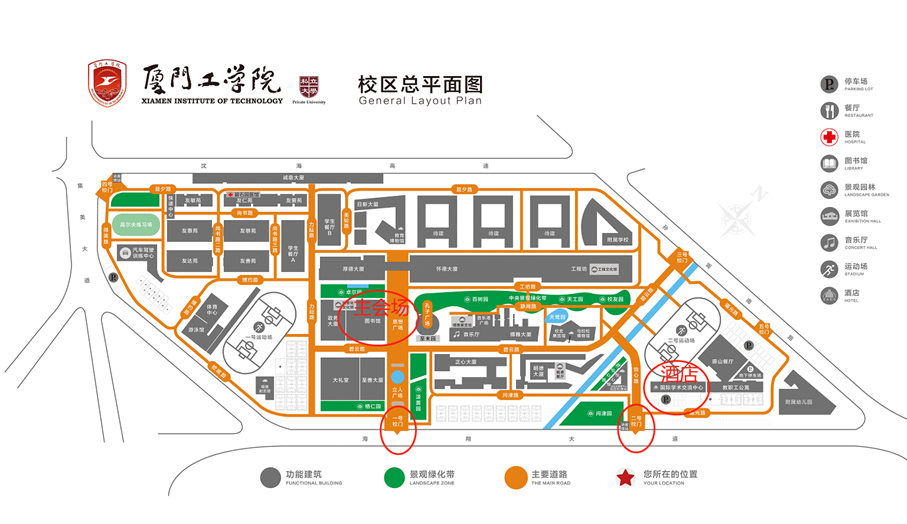

为了更好地促进我省人工智能领域的科技创新，促进智能科学与技术人才队伍的成长，兹定于2024年11月29日-2024年12月1日在厦门召开“福建省人工智能学会2024年学术年会”，会议的主题是“混合智能”；同期举办“第三届闽台非遗数字化保护与智能处理会议”。本次会议由福建省人工智能学会主办，厦门工学院承办，厦门大学、福州大学、福建师范大学、福建农林大学、华侨大学、集美大学、闽台非遗文化数字化保护与智能处理文化和旅游部重点实验室、闽台文化数字化传承与智能计算福建省高校工程研究中心等单位协办。
会议组委会热忱邀请您参加本次大会，交流人工智能相关领域最新的研究成果，共商福建省人工智能学科教育的发展大计。现将会议相关事宜通知如下：
一、会议时间
2024年11月29日-2024年12月1日
二、会议地点
厦门工学院国际学术交流中心（地址：厦门市集美区孙坂南路1251号，联系电话：0592-6667809）。
三、会议内容
1. 邀请3位国内同行专家作大会特邀报告；
2. 举办青年论坛、非遗论坛（并行进行）；
3. 福建省人工智能学会理事会会议；
4. 文旅部重实验室工作会议（学术委员会成员参加）。
四、参会人员
福建省人工智能学会理事、会员，高校、IT企业、科研院所、政府部门、事业单位等从事计算机及相关专业的人员。
五、其他事项
1. 请各位参会代表于11月15日前将参会回执表以电子版的方式报会务组邮箱：sz@xit.edu.cn 。
2.
会务费：600元/人（往返交通费及食宿费自理）。会务费发票由厦门工学院国际学术交流中心有限公司开具。付款码如下，付款时请备注“智能年会+姓名”。
3. 会议统一安排酒店入住厦门工学院国际学术交流中心，酒店预订电话：0592-3668888。
4. 参会报到时间、地点：2024年11月29日14:00～21:00（厦门工学院国际学术交流中心）。
5. 联系人：
会务联系人：
陈黎霜：13599907034（厦门工学院）
叶诗菡：15860769479（厦门工学院）
酒店预订：0592-3668888
学会联系人：
陈毅东：13063057751
李 静：18950005506
部重工作会议联系人：
张延坤：15985880521
福建省人工智能学会 闽台非遗文化数字化保护与智能处理
文化和旅游部重点实验室
2024年11月1日
福建省人工智能学会2024年学术年会参会回执表
姓名 |
性别 |
职务 |
职称 |
|||||||||
学校名称 |
电子邮件 |
|||||||||||
工作单位 |
手机 |
|||||||||||
线下参会人员填写 |
预计到达时间 |
预计返程时间 |
||||||||||
抵达航班信息 |
抵达铁路信息 |
|||||||||||
|
车牌 （自驾者填写） |
||||||||||||
|
住宿选择 （请在相应的选项上打“√”） 由会议统一预定房间，费用自理。 |
住宿日期： （ ）11月29日（周五） （ ）11月30日（周六） 房型：（住宿酒店：厦门工学院国际学术交流中心） （ ）精品大床房288元/间 （ ）高级双人房328元/间 （ ）合住（ ）单住 （ ）豪华双人房358元/间 （ ）合住（ ）单住 |
|||||||||||
|
用餐选择 （请在相应的选项上打“√”） |
（ ）11月29日晚餐 （ ）11月30日午餐 （ ）11月30日晚宴 |
|||||||||||
|
身份证号 （用于办理入住和出入校园使用） |
||||||||||||
发票信息预留 |
单位抬头（ ） 纳税人识别号（ ） 其它信息： |
|||||||||||
|
12月1日学术交流活动 （请在选项上打“√”） |
（ ）参加 （ ）不参加 |
|||||||||||
若有其他要求，请注明 |
||||||||||||
备注：请详实填写此回执表，于2024年11月25日前将回执发送至：sz@xit.edu.cn。（注：逾期无法保证房源）
福建省人工智能学会2024年学术年会议程
2024年11月29日(周五) | ||||
时 间 |
程 序 |
地 点 |
主持人/参与人 |
|
14:00～21:00 |
会议代表入住/报到 |
国际学术交流中心大堂 |
会务组 |
|
18:00～19:30 |
晚餐 |
国际学术交流中心原山餐厅 |
会务组 |
|
19:30～21:00 |
文旅部重实验室工作会议 |
平远楼悦容厅 |
文旅部重实验室学术委员会成员 |
|
2024年11月30日(周六)上午，地点： 图书馆 立林学术报告厅 | ||||
时 间 |
程 序 |
主持人/参与人 |
||
08:30～09:00 |
会议代表报到 |
会务组 |
||
09:00～09:20 |
开幕式 1. 厦门工学院领导致辞 2. 学会理事长致辞 |
立林学术报告厅 |
||
09:20～09:30 |
全体代表合影 |
会务组 |
||
09:30～10:15 |
大会报告(一) |
立林学术报告厅 |
||
10:15～10:30 |
茶歇 |
会务组 |
||
10:30～11:15 |
大会报告(二) |
立林学术报告厅 |
||
11:15～12:00 |
大会报告(三) |
立林学术报告厅 |
||
午餐，12:00～13:30，地点：A3餐厅 | ||||
|
2024年11月30日(周六)下午 理事会会议地点：图书馆 启贤会议室 青年论坛地点：明德大厦125 非遗论坛地点：明德大厦126 | ||||
13:30～14:30 |
理事会会议 |
全体理事 |
||
14:30～17:45 |
青年论坛 |
非遗论坛 （包括文旅部重点实验室发展研讨会） |
||
晚宴，18:00～19:30，地点：原山餐厅 | ||||
2024年12月1日(周日) | ||||
学术交流活动与离会 | ||||
福建省人工智能学会2024年学术年会微信群二维码
会议酒店交通指南
1. 自驾车从厦门岛内来：
（1）从厦门岛内出发，经厦门大桥—福厦高速路方向—坂头出口下，左转孙坂南路（坂头方向）—厦门工学院2号门。
（2）从厦门岛内出发，经集美大桥—集美大道—BRT中科院站—右转进入辅道—上坡后前行一公里到立交桥下掉头前行到达厦门工学院2号门。
2.自驾车从岛外、外地来：
沿福—厦—漳—诏高速公路，出厦门高速路收费站沿海翔大道下高速，沿海翔大道至厦门工学院2号门。
1. 乘坐949路、957路、917路、914路在“厦门工学院南门站”下车，步行50米到学校1号门。
2. 乘坐BRT快1、快6线至“中科院站”下车，步行1200米至厦门工学院1号门。
3. 高崎机场T3航站楼可乘坐78路到“BRT县后站”，再换乘BRT快1、快6线到“中科院站”下车；高崎机场T4航站楼可向左直行100米到达BRT“T4航站楼站”，乘坐BRT快1、快6线到“中科院站”下车。从厦门岛内出发，经集美大桥—集美大道—BRT中科院站—右转进入辅道—上坡后前行一公里过地下通道后到达厦门工学院1号门。
厦门北站可乘坐地铁1号线到“集美大道站”下车，从4号出站口出地面后步行800米到达学校4号门，可漫步校园1000米至图书馆立林学术报告厅。
